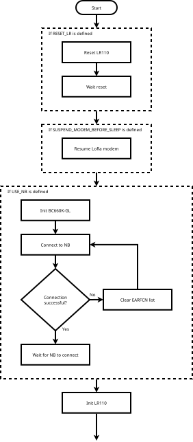
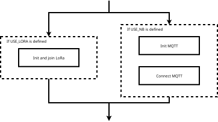
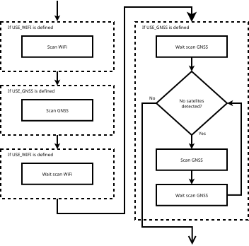
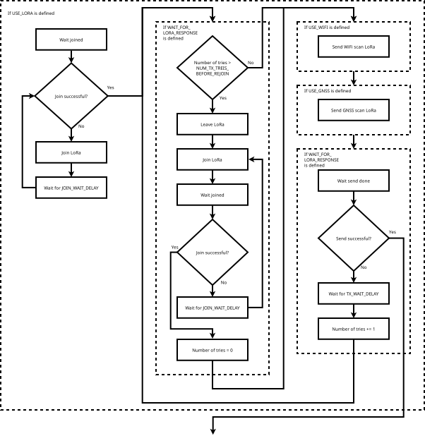
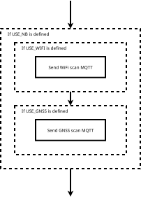
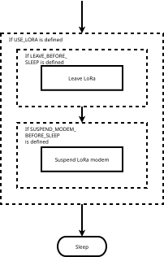

Development and implementation of embedded low-power tracking platform
Master's Defense 2025
Jonas Birkedal Dudal Jensen (s203849)
Test
- Goal - Creating a tracking platform, not a tracker
- Motivation - Why design a low power tracker?
-
Developing the tracker
- Writing Code
- Creating PCB
- Profiling code
- Tracking accuracy: 50m
- Battery-lifetime: 10 years
- Communication range: 10km
- Simple visualization of power consumption
- Optimizations
- Range of communication
- Power consumption
- Modularity
- Program parts
- Initialization
- Join network
- Scan location
- Send data
- Exit
- Program flow using #define
Initialization
- Reset LR1110
- Resume LR1110 communication
- Initialize BC660K-GL
- Connect to NB
- Initialize LR1110

Join Network

Scan Location
- Scan WiFi
- Scan GNSS
- Wait for WiFi
- Wait for GNSS
- Is data valid?
- No: Scan again and wait for result
- Yes: Continue

Send Data - LoRa
- Wait for connection
- Try to send data
- If data transmission failed, rejoin network

Send Data - MQTT
- Send WiFi data
- Send GNSS data

Exit
- Leave LoRa
- Suspend LR1110 communication

Sleep
- Different sleep modes used different places:
- Waiting for LR1110 communication
- Sleeping at the end after execution is done

- Accuracy of tracking
- Power consumption of settings
- Execution charge
- Average sleep current
| Dorm Inside |
Dorm Outside |
DTU Inside |
|
|
|
|
| DTU Outside |
High Density Apartments |
Low Density Apartments |
|
|
|
|
| Dorm Inside |
Dorm Outside |
DTU Inside |
|
|
|
|
| DTU Outside |
High Density Apartments |
Low Density Apartments |
|
|
|
|
| Dorm Inside |
Dorm Outside |
DTU Inside |
|
|
|
|
| DTU Outside |
High Density Apartments |
Low Density Apartments |
|
|
|
|
| Dorm Inside |
Dorm Outside |
DTU Inside |
|
|
|
|
| DTU Outside |
High Density Apartments |
Low Density Apartments |
|
|
|
|
| Dorm Inside |
Dorm Outside |
DTU Inside |
|
|
|
|
| DTU Outside |
High Density Apartments |
Low Density Apartments |
|
|
|
|

- Compiler flags
- Pull-up on NSS
- Sleeping/busy waiting
- Resetting devices
- Leaving and suspending
- Waiting for TX window
- Clock frequencies
- Supply voltage


- Estimate charge of device in sleep mode
- MCU: 16nA
- LR1110: 1.6μA
- Total: 1.616μA
- Estimate program execution time
- Runtime/Executions: 12h/1101
- Average execution: 29.2s
- Calculate average current for CR2032: 2.566μA
- Calculate period: 3.93 days
Tracking Accuracy
- GPS error lower than WiFi
- GPS still inaccurate
- Forrest measurements very inaccurate
Power Consumption
- Optimization flags
- MCU waiting for LR1110 more
- Favoring fast energy intensive instructions
- Adding PU and leaving network
- Not waiting for response
- Optimal frequency
Battery-Lifetime
- Charge decrease when reducing voltage
- Skip listening did not work, no package received
- Sleep current estimated
- Sleep period very long, could be fixed with adding battery
Achieved
- Battery life of 10 years
- Simple visualization of power consumption
- Communication range of 10km
Somewhat Achieved
- Tracking accuracy bellow 50m
- More tests of accuracy
- Missing power measurements
- Program improvements
- LR1110 Firmware
- Get BC660K-GL to work
- Using other device for NB
- GetTime from BC660K-GL
- PCB improvements
- More tests of accuracy
- Missing power measurements
- Program improvements
- LR1110 Firmware
- Get BC660K-GL to work
- Using other device for NB
- GetTime from BC660K-GL
- PCB improvements
- More tests of accuracy
- Missing power measurements
- Program improvements
- LR1110 Firmware
- Get BC660K-GL to work
- Using other device for NB
- GetTime from BC660K-GL
- PCB improvements
- More tests of accuracy
- Missing power measurements
- Program improvements
- LR1110 Firmware
- Get BC660K-GL to work
- Using other device for NB
- GetTime from BC660K-GL
- PCB improvements